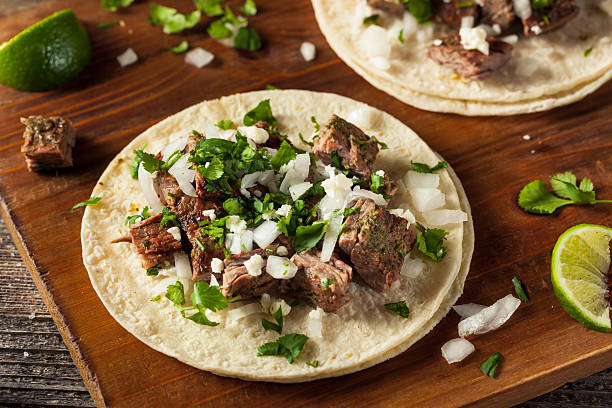

Steak Tacos

Description
The perfect Taco Tuesday Steak Tacos! With savory sirloin steak and the fresh onions and cilantro to top them off, these tacos will have all your family and friends inviting themselves over every tuesday!
Ingredients:
- 8oz of Sirloin Steak
- 1 White Onion
- Bushel of Cilantro
- 2 Limes
- Tortillas
- Salt
- Black Pepper
- Avocado Oil
Steps:
- Dry steak with paper towels
- Dice steak into small cubes ad place to the side
- Dice onions and set in a serving bowl
- Mince cilantro and set in a serving bowl
- Heat skillet on medium-high heat with oil
- Throw steak into hot skiller to start cooking
- Season generously with salt and black pepper
- In a separate pan start heating tortillas
- Once steak is golden brown with a nice seared crust, take out to rest
- On a dinner place, lay out three tortillas
- Add steak, cilantro, and onion to the tortillas
- Squeeze cut limes to flavor
- Enjoy!